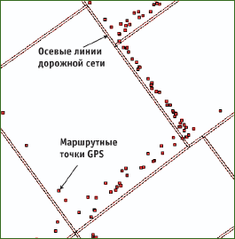
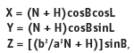
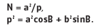
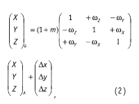
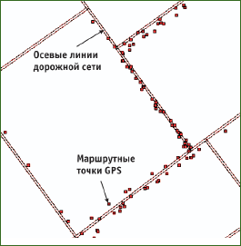

О преобразовании систем координат в MapInfo Professional
Автор: А.Н. Тимофеев ©2005
В 1971 г. окончил НИИГАиК по специальности «прикладная геодезия». С 1970 по 1996 г. работал в Прикладной геодезии. С 1997 г. работает в научно-техническом отделе ОАО «Стройизыскания» (Новосибирск), в настоящее время – главный специалист.
Автор: С.С. Легачев ©2005
В 2001 г. окончил СГГА по специальности «астрономо-геодезия». С 2000 г. работает в топографо-геодезической экспедиции ОАО «Стройизыскания» (Новосибирск), в настоящее время – инженер-технолог.
Статья опубликована в журнале Геопрофи в 2005 году update.
ГИС MapInfo Professional (MapInfo Corp., США) имеет широкое распространение в России и используется в землеустройстве, ведении территориальных кадастров, экологии, геологии, лесоустройстве и др.
Координатная основа России представлена референцной системой координат. В качестве референцной системы для территории России в 1946 г. была установлена система координат 1942 г. (СК–42), а 1 июля 2002 г. – новая референцная система СК–95 [1]. За отсчетную поверхность в обеих системах координат принят референц-эллипсоид Красовского. В настоящее время СК–42 является основной в повседневной практике и будет использоваться до завершения мероприятий по переходу на СК–95.
Кроме СК–42, в России используются и другие системы координат, например, система координат 1963 г. Тем не менее, большая часть топографических карт масштабов 1:10 000–1:100 000 составлены в равноугольной поперечно-циллиндрической проекции Гаусса в системе координат СК–42, а цифровые карты в растровом и векторном виде являются, в основном, производными от топографических карт в СК–42.
В последнее время широкое распространение приобрели навигационные приемники GPS. Входящий в состав ГИС MapInfo программный модуль «The Geographic Tracker», предназначенный для поддержки системы GPS, хорошо интегрируется с приемниками GPS. В числе функций, выполняемых этим модулем: отображение данных GPS-измерений в графическом и текстовом видах в режиме реального времени. Для определения координат точек местности с помощью спутниковых приемников используется абсолютный метод, который позволяет оперативно определять местоположение объекта местности в системе координат WGS–84.
MapInfo поддерживает более 300 систем координат. Базовой системой координат является WGS–84, за отсчетную поверхность принят общеземной эллипсоид WGS–84. Для преобразования координат в другие системы используются «Уточняющие параметры». Система СК–42 представлена в виде геодезических и плоских прямоугольных координат, в терминологии MapInfo они именуются «Долгота/Широта (Пулково 1942)» и «Гаусса-Крюгера (Пулково 1942)», отсчетная поверхность системы референц-эллипсоид Красовского [2].
При использовании спутниковой GPS-аппаратуры совместно с ГИС MapInfo у пользователя появляется необходимость соединить топографические карты и данные GPS, представленных в СК–42 и WGS–84, соответственно. Для этого в MapInfo выполняется преобразование координат между системами. Однако преобразование координат из системы СК–42 в WGS–84 выполняется не точно, с погрешностью ∆x = 21,4 м, ∆y = –2,6 м.
На рис. 1 приведен пример нестыковки осевых линий дорожной сети, выполненной в «Гаусса-Крюгера (Пулково 1942)», и маршрутных точек GPS в WGS–84.

Рис. 1
Фрагмент нестыковки осевых линий дорожной сети в «Пулково 1942» и маршрутных точек GPS в WGS–84
В общеземной WGS–84 и референцной СК–42 системах координат положение точек земной поверхности могут задаваться различными видами координат: пространственными прямоугольными координатами X, Y, Z, геодезическими В, L, Н, плоскими прямоугольными координатами х, у и т. д.
Внутри каждой системы, между видами координат существуют математические связи. Так, в СК–42 геодезические координаты В, L, Н связаны с пространственными прямоугольными координатами X, Y, Z, согласно [3], следующими соотношениями:  где a и b – полуоси эллипсоида, 
Связь между различными системами устанавливается, например, через пространственные прямоугольные координаты этих систем. Для этого используются следующие элементы трансформирования: три линейных (смещение начала координат), три угловых (разворот осей координат) и масштабный коэффициент (линейный масштаб одной системы относительно другой).
В общем случае преобразование координат между системами осуществляется с использованием элементов трансформирования, согласно [3], по формуле:

где ∆x, ∆y, ∆z – линейные элементы трансформирования;
ωx, ωy, ωz – угловые элементы трансформирования;
m – дифференциальное различие масштабов систем координат;
А, Б – системы координат.
Можно предположить, что в MapInfo используются приближенные элементы трансформирования «Пулково 1942», задающие ориентировку референц-эллипсоида Красовского относительно общеземного эллипсоида WGS–84. В то же время MapInfo позволяет уточнять модели референц-эллипсоидов с использованием элементов трансформирования, в терминологии MapInfo – «параметров». Поэтому логично ввести в «Пулково 1942» соответствующую корректировку. Для этого необходимо сначала определить элементы трансформирования между системами WGS–84 и СК–42, а затем, используя полученные элементы, уточнить в MapInfo координатную систему. Полученную систему назовем, например, «Пулково 42–WGS».
Изменение координатной системы в MapInfo осуществляется путем ввода соответствующих элементов трансформирования в файл «MapInfo.prj». Элементы трансформирования между системами WGS-84 и «Пулково 42–WGS» можно получить, например, с помощью программного обеспечения, предназначенного для обработки данных спутниковых геодезических измерений.
Для каждой системы координат файл «MapInfo.prj» содержит список определяющих ее параметров, записанных в одну строку. Например, строка, определяющая «Пулково 1942», в виде геодезических координат выглядит так:
"Долгота/Широта (Пулково 1942)", 1, 1001
Строка, определяющая систему плоских прямоугольных координат «Пулково 1942» для 14-й зоны в проекции Гаусса-Крюгера, приведена в следующем виде:
"GK зона 14 (Пулково 1942)/p28414", 8, 1001, 7, 81, 0, 1, 14500000, 0
Первым значением в строке описания задается название координатной системы в кавычках. Затем следует номер, задающий вид проекции и, далее, значения параметров координатной системы.
Отредактировав файл «Mapinfo.prj», подставив значения элементов трансформирования, как описано в руководстве [2], получим определение новой координатной системы «Пулково 42–WGS».
Например, строка, определяющая новую систему координат «Пулково 42–WGS», в виде геодезических координат должна выглядеть следующим образом:
"Долгота/Широта (Пулково 42–WGS)", 1, 9999, 3, 26,3, –132,6, –76,3, –0,22, –0,4, –0,9, –0,12, 0
Строка, определяющая систему плоских прямоугольных координат новой «Пулково 42–WGS» для 14-й зоны в проекции Гаусса-Крюгера, должна быть введена в следующем виде:
"GK зона 14 (Пулково 42–WGS)/p28414", 8, 9999, 3, 26,3, –132,6, –76,3, –0,22, –0,4, –0,9, –0,12, 0, 7, 81, 0, 1, 14500000, 0
Указанные элементы трансформирования являются также приближенными, но позволяют на порядок повысить точность пересчета координат между системами «Пулково 42-WGS» и WGS-84 в MapInfo, приблизив ее к метровой точности (рис. 2).

Рис. 2
Фрагмент данных осевых линий дорожной сети в «Пулково 42–WGS», совмещенных с маршрутными точками GPS в WGS–84
Точные элементы трансформирования между системами координат могут быть получены, например, в результате совместного уравнивания результатов спутниковых и наземных измерений [4], включая элементы трансформирования при уравнивании в качестве дополнительных неизвестных.
На практике, при работе в MapInfo с данными навигационных приемников GPS, метровая точность пересчета является достаточной, чему удовлетворяют приведенные элементы трансформирования.
Список литературы
- Постановление Правительства РФ «Об установлении государственных систем координат» № 568 от 28 июля 2000 г.
- MapInfo Professional. Руководство пользователя. – Нью-Йорк: MapInfo Corp., 2000.
- ГОСТ Р51794–2001. Системы координат. Методы преобразований координат определяемых точек. – М.: Госстандарт РФ, 2001.
- Маркузе Ю.И. Алгоритм объединения наземных и спутниковых геодезических сетей // Геодезия и картография. – 1997. – № 9.
RESUME
Errors of the coordinate transformation for the «1942» (SK–42) and WGS–84 coordinate systems in the MapInfo are estimated as 21,4 m for the x axis and –2,6 m for the y axis. This accuracy is insufficient for certain tasks when contemporary (including navigational) GPS-systems are used.
An algorithm for correction of the transformation elements for the SK–42 coordinate systems relative to the basic WGS–84 coordinate system using MapInfo standard tools is presented. This correction is aimed at the accuracy improvement.
Загрузить оригинал статьи (236 KB) >>>
Загрузить копию (ZIP, 224 KB) >>>
UPD:
В адрес сайта пришло письмо читателя, в котором он высказал совершенно справедливые замечания. Цитата:
В статье на Вашем сайте приведены параметры согласно ГОСТ Р51794–2001, но в настоящий момент он отменен и действует ГОСТ Р51794–2008 (…)
Согласно ГОСТ Р51794–2008:
"Долгота / Широта (Пулково 1942–WGS ГОСТ 51794-2008)", 1, 9999, 3, 23.56, -140.95, -79.8, 0, -0.35, -0.79, -0.22, 0
"— Гаусса-Крюгера (Пулково 1942-WGS ГОСТ 51794-2008) —"
"GK зона 1 (Пулково 1942–WGS)", 8, 9999, 3, 23.56, -140.95, -79.8, 0, -0.35, -0.79, -0.22, 0, 7, 3, 0, 1, 1500000, 0
и т.д.
Для 3-х градусных зон СК-42:
"GK зона 7 (Пулково 1942)", 8, 9999, 3, 23.56, -140.95, -79.8, 0, -0.35, -0.79, -0.22, 0, 7, 3, 0, 1, 7500000, 0
и т.д.
Для СК-63:
"1963_номер зоны", 8, 9999, 3, 23.56, -140.95, -79.8, 0, -0.35, -0.79, -0.22, 0, 7, хх.хх, у.уууууу, 1, aaaaaaa, 0
и т.д.
С уважением,
ведущий маркшейдер маркшейдерско-геодезического отдела
ООО «Газпром нефть шельф»
Донецков Андрей Александрович